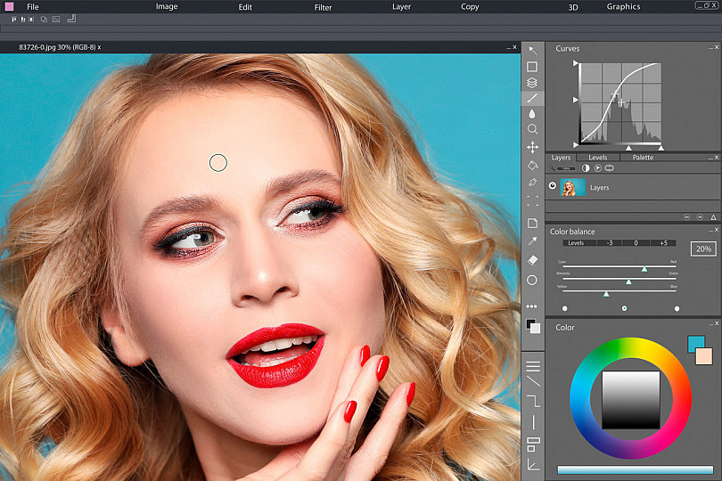
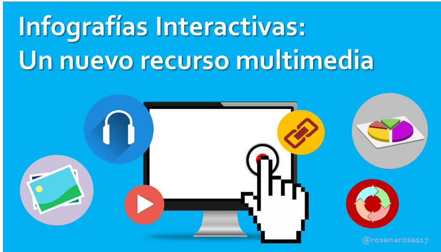

¿Qué es Producciones Digitales?
Es una materia donde aprendemos a crear contenido digital como páginas web, gráficos, videos y presentaciones interactivas.
Objetivos generales
-Comprender el concepto de producción digital y su importancia en el mundo actual.-Desarrollar competencias en el uso de herramientas y plataformas digitales.
-Promover la creatividad, la innovación y el pensamiento crítico.
-Aprender a planificar, diseñar, producir y evaluar productos digitales.
- Fomentar el trabajo colaborativo y el manejo responsable de las tecnologías.
Tipos de producciones digitales
-Imagen fija: edición fotográfica, diseño gráfico.

-Audio: edición de sonido, producción de podcast.

-Video: filmación, montaje, postproducción.

-Animación: animación 2D y 3D, stop motion.

-Multimedia interactiva: presentaciones, páginas web, videojuegos simples.
